워드프로세서-(구-1급) (2002-03-10 기출문제)
1과목: 워드프로세싱 일반
1. 다음 중 저장기능에 대한 설명으로 옳지 않은 것은?
- 작업한 문서에 파일이름을 지정하여 주기억장치에 저장하는 기능이다.
- 작성한 문서는 다양한 파일 형식으로 선택하여 저장할 수 있다.
- 저장하기 대화상자에서 폴더를 새로 만들거나 삭제할 수 있다.
- 문서를 저장할 때 암호를 지정하여 저장할 수 있다.
(정답률: 66%)

2. 다음 중 그리기 도구를 이용하여 그린 도형에 대한 설명으로 옳지 않은 것은?
- 마우스 포인터 ↔, ↕ 등은 개체(도형)의 크기를 변경할 때 나타난다.
- 사각형이나 원을 그릴 때 [shift]키와 함께 끌기를 하면 정사각형, 정원 등을 그릴 수가 있다.
- 개체(도형)를 이동할 때 [shift]키를 누른 채로 이동하면 개체(도형)가 복사된다.
- [shift]키를 누른 상태에서 여러 도형을 클릭하면 모두 선택된다.
(정답률: 67%)
3. 다음은 그리기 기능에 대한 설명이다. 옳은 설명이 모두 나열된 것은?
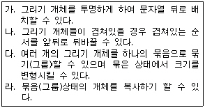
- 가, 나
- 가, 나, 라
- 나, 다, 라
- 가, 나, 다, 라
(정답률: 68%)
4. 다음은 무엇에 대한 설명인가?
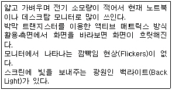
- CRT(Cathode Ray Tube)
- PDP(Plasma Display Panel)
- TFT LCD(Thin Film Transistor Liquid Crystal Display)
- FED(Field Emission Display)
(정답률: 68%)
5. 문서를 작성하다 보면 제목 또는 특별히 강조하고 싶은 문단이나 글자 등에 여러 가지 글자모양이나 속성 그리고 문단모양을 주게 되는 경우가 발생한다. 이런 문제를 가장 효율적으로 해결할 수 있는 기능은?
- 매크로(Macro)
- 상용구(Glossary)
- 정형구(Lexicon)
- 스타일(Style)
(정답률: 79%)
6. 다음 중 서체구현 방식에서 외곽선 정보를 사용한 서체가 아닌 것은?
- 비트 맵(Bit Map)
- 트루 타입(True Type)
- 벡터 폰트(Vector Font)
- 오픈 타입(Open Type)
(정답률: 72%)
7. 다음 중 워드프로세서의 화면 표시 기능에 관련된 설명으로 옳지 않은 것은?
- 상태 표시줄과 눈금자는 문서 편집과 관련된 각종 정보를 표시해 주는 영역이다.
- 편집 중인 문서의 특정 행이나 특정 페이지로 곧바로 이동할 수 있는 행 호출, 페이지 호출 기능이 있다.
- 그래픽 방식은 픽셀(Pixel)을 기본 단위로 하여 문자를 표시한다.
- 작성한 문서를 인쇄하기 전에 전체적인 윤곽을 잡기 위해 화면을 통해 미리보는 기능을 위지윅(WYSIWYG)이라 한다.
(정답률: 62%)
8. 다음에서 설명하는 기억 장치는?
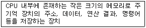
- 캐시 메모리
- 가상 기억장치
- 레지스터
- 플래시 메모리
(정답률: 61%)
9. 다음은 워드프로세서의 어느 용어에 대한 설명인가?
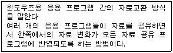
- 포맷
- 스타일
- OLE
- 매크로
(정답률: 79%)
10. 다음 중 행두 금칙 문자로만 짝지어진 것은?
- % ) #
- ) ? @
- ? ! :
- ] } <
(정답률: 63%)
11. 다음 중 들여쓰기와 내어쓰기에 대한 설명으로 옳지 않은 것은?
- 문단의 시작부분을 지정된 위치만큼 안으로 들여쓰는 기능을 들여쓰기(Indent)라 한다.
- 문단의 시작부분을 지정된 위치만큼 내어쓰는 기능을 내어쓰기(Outdent)라 한다.
- 들여쓰기나 내어쓰기 모두 하나의 문단 또는 여러 문단에 동시에 적용할 수 있다.
- 들여쓰기는 문서의 양이 감소하고, 내어쓰기는 문서의 양이 증가한다.
(정답률: 68%)
12. 다음 중 편집 관련 용어에 대한 설명으로 옳지 않는 것은?
- 각주 : 주석, 부가 설명, 참고 내용 등을 달기 위한 기능으로 매 페이지의 아래쪽에 표시되는 주석을 의미한다.
- 미주 : 문서 내용 중 특정 단어나 인용문 등에 대한 설명이 매 페이지의 아래쪽에 표시된다.
- 마진 : 문서의 상하좌우 여백을 의미한다.
- 꼬리말 : 문서의 매 페이지 아래에 고정적으로 들어가는 단어나 페이지 번호 등이 입력된다.
(정답률: 66%)
13. 다음 중 문서의 분량이 증가할 가능성이 있는 교정부호의 집합은?
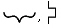
(정답률: 70%)
14. 다음 중 통상적으로 PC를 사용하여 작성한 문서를 교정하는데 필요한 교정부호 중 가장 적합하지 않은 것은?
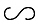
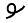
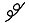
(정답률: 68%)
15. 공문서에 대한 행정기관의 장의 역할이 아닌 것은?
- 일반적으로 공문서의 결재권자이다.
- 정보통신망을 이용하여 문서를 접수할 수 있도록 필요한 조치를 한다.
- 전자관인을 위조 또는 부정사용하지 못하도록 필요한 안전장치를 한다.
- 행정사무의 표준화를 위해 행정 전산망 공통행정코드를 정한다.
(정답률: 50%)
16. 공문서 작성시 수신기관이 2 이상인 때에 수신처란을 설정하는 위치는?
- 두문에 표시한다.
- 본문에 표시한다.
- 수신란에 표시한다.
- 발신명의 왼쪽 아래 표시한다.
(정답률: 58%)
17. 문서작성의 일반사항에 해당하지 않는 것은?
- 문서는 쉽고 간명하게 한글로 작성하되, 올바른 뜻의 전달을 위하여 필요한 경우에는 괄호 안에 한자 및 외국어 등을 넣어 쓸 수 있다.
- 문서에 쓰는 숫자로 특별한 사유가 있는 경우를 제외하고는 아라비아 숫자로 한다.
- 문서에 쓰는 시, 분의 표기는 오전, 오후를 명확히 표기하되 시, 분의 글자를 생략하고 그 사이 쌍점을 찍어 구분한다.
- 문서작성에 쓰이는 용지의 크기는 특별한 사유가 있는 경우를 제외하고는 A4 규격으로 한다.
(정답률: 61%)
18. 다음 중 전자출판에 제한된 색상을 이용하여 복잡한 색을 구현해 내는 기법은?
- 커닝(Kerning)
- 오버프린트(Overprint)
- 리터칭(Retouching)
- 디더링(Dithering)
(정답률: 70%)
19. DTP에 관한 설명 중 옳지 않은 것은?
- CD-ROM 타이틀의 저작도구이다.
- WYSIWYG의 구현이 가능하다.
- Desk Top Publishing의 머릿글자이다.
- 대부분 PC에서 작업이 가능하다.
(정답률: 65%)
20. 전자출판에서 오버프린트(Over Print)에 대한 설명으로 가장 적절한 것은?
- 특정한 개체 주위로 텍스트가 침범하지 않게 하는 기능
- 문자 위에 겹쳐서 문자를 중복 인쇄하는 작업
- 글자의 자간을 좁혀서 인쇄하는 방법
- 새 문서에서 개체를 편집하는 행위
(정답률: 78%)
2과목: PC 운영 체제
21. 한글 Windows 98에서 탐색기 실행 방법으로 틀린 것은?
- [Shift]키를 누른 상태에서 바탕화면의 [내 컴퓨터] 아이콘을 더블 클릭한다.
- [내 컴퓨터] 아이콘이나 [시작] 버튼의 바로가기 메뉴에서 [탐색]을 선택한다.
- 시작메뉴의 [실행]을 선택하고 실행 창에서 explorer를 입력하고 확인버튼을 누른다.
- [Ctrl]+[Alt]+[Esc]키를 누른다.
(정답률: 63%)
22. 한글 Windows 98에서 디스크 검사의 설명으로 거리가 먼 것은?
- 시작메뉴의 [프로그램]-[보조프로그램]-[시스템도구]-[디스크 검사]를 실행하면 된다.
- 해당 디스크 드라이브의 등록정보 창에서 도구 탭의 오류검사 단추를 클릭하면 실행된다.
- 검사할 디스크 드라이브의 선택 뿐만 아니라 표준 검사나 정밀 검사와 같은 검사 방법 등의 선택이 가능하다.
- 바이러스와 같은 오류를 자동으로 검출하여 복구하여 준다.
(정답률: 69%)
23. 한글 Windows 98의 메모장에 관한 설명으로 거리가 먼 것은?
- 64KB 이하의 텍스트 파일을 편집할 수 있는 문서편집기이다.
- 인쇄시 머리글과 바닥글을 추가할 수 있다.
- 문서내용의 일부분만을 부분 선택하여 글꼴을 바꿀 수 있다.
- 특정 문자열에 대한 [찾기] 기능이 있다.
(정답률: 62%)
24. 한글 Windows 98에서 파일이나 폴더를 찾기 위한 [찾기] 창에서 영문으로 되어 있는 파일이나 폴더 이름의 대/소문자를 구분하여 찾을 수 있게 하는 기능을 설정하는 메뉴는?
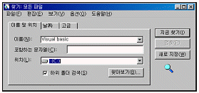
- 파일
- 편집
- 보기
- 옵션
(정답률: 60%)
25. 다음 중 한글 Windows 98의 드라이브 변환기(FAT32)에 대한 설명으로 옳지 않은 것은?
- 드라이브가 압축되어 있는 상태에서 FAT32로 변환할 수 있다.
- 변환을 하면 데이터를 더 효율적으로 저장하므로 드라이브에 여유 공간이 생긴다.
- FAT32 파일 시스템으로 변환하면 프로그램을 더 빨리 로드할 수 있다.
- 드라이브 변환기는 드라이브를 FAT32 파일 시스템으로 변환한다.
(정답률: 44%)
26. 한글 Windows 98에서 컴퓨터 시스템에 설치되어 있지 않은 새로운 주변기기를 설치하고자 하는 경우 사용하는 제어판 항목은?
- 장치관리자
- 내게 필요한 옵션
- 새 하드웨어 추가
- 시스템
(정답률: 65%)
27. 한글 Windows 98의 탐색기 창에서 특정 파일 선택 후 속성을 읽기 전용으로 설정하는 방법 중 올바른 것은?
- [도구] 메뉴의 [폴더 옵션]을 선택하고 보기 창에서 읽기 전용을 설정한다.
- [파일] 메뉴의 [등록정보]를 선택하고 읽기 전용을 설정한다.
- [편집] 메뉴의 [읽기/쓰기]를 선택하고 읽기 전용을 설정한다.
- [보기] 메뉴의 [탐색창]을 선택하고 읽기 전용을 설정한다.
(정답률: 48%)
28. 한글 Windows 98에서는 오디오 CD나 Auto Run 기능이 있는 CD를 CD-ROM 드라이브에 삽입하면 자동으로 재생이 된다. 자동재생 기능을 방지하는 방법으로 가장 적절한 것은?
- [Alt]키를 누른 상태에서 CD를 삽입한다.
- [Shift]키를 누른 상태에서 CD를 삽입한다.
- [Ctrl]키를 누른 상태에서 CD를 삽입한다.
- [Space bar]키를 누른 상태에서 CD를 삽입한다.
(정답률: 68%)
29. 한글 Windows 98에서 특정 파일의 형식정보에 따라 연결된 프로그램을 변경하는 경우에 사용하는 것은?
- 제어판의 [국가별 설정]의 등록정보
- 탐색창의 [보기] 메뉴의 폴더옵션
- 탐색창의 [도움말] 메뉴의 Windows 98 정보
- 제어판의 [시스템]의 등록정보
(정답률: 48%)
30. Windows 98의 [네트워크 환경]의 등록정보에서 추가할 수 있는 네트워크 구성요소의 종류가 아닌 것은?
- 어댑터
- 프로토콜
- 서비스
- 서버
(정답률: 42%)
31. 한글 Windows 98에서 PC를 사용하는 도중에 예기치 않은 상황에서 응답하지 않은 응용 프로그램을 종료시키기 위해 프로그램 종료 창을 호출하기 위한 윈도우의 바로가기 키는?
- [Alt]+[F10]
- [Alt]+[F4]
- [Ctrl]+[Alt]+[Del]
- [Ctrl]+[Esc]
(정답률: 69%)
32. 한글 Windows 98 실행 창에서 현재 설정되어 있는 네트워크의 IP 주소가 무엇인지를 확인하기 위하여 사용하는 명령어는?
- cliconfg
- ping
- winipcfg
- nslookup
(정답률: 39%)
33. 한글 Windows 98에서 [제어판]-[내게 필요한 옵션] 메뉴를 이용하여 설정할 수 있는 기능이 아닌 것은?
- 동시에 두 개의 키를 누르기가 힘든 경우 [Shift], [Ctrl] 또는 [Alt]키가 기본적으로 눌려 있는 상태로 고정할 수 있다.
- 짧은 시간동안 눌려진 키 또는 빠르게 반복되는 키 입력을 무시하도록 하거나 키의 반복 속도를 느리게 지정할 수 있다.
- [Caps Lock], [Num Lock], [Scroll Lock]키를 누를 때 신호음을 들을 수 있다.
- 바탕화면에 있는 [내 컴퓨터], [휴지통], [내 문서], [네트워크 환경]과 같은 아이콘의 모양을 변경할 수 있다.
(정답률: 62%)
34. 한글 Windows 98의 시작 프로그램 메뉴에서 [프로그램]-[보조프로그램]-[인터넷 도구]-[인터넷 연결 마법사]를 실행하였을 때 초기 화면에서 제공되는 설정 항목이 아닌 것은?
- 자동으로 인터넷 계정으로 등록
- 새 인터넷 계정으로 등록
- 기존 인터넷 계정으로 연결
- 수동으로 인터넷 연결 설정 또는 LAN을 통해 인터넷에 연결
(정답률: 44%)
35. 한글 Windows 98의 바로가기 아이콘에 대한 설명으로 가장 옳지 않은 것은?
- 바로가기 아이콘의 확장자는 LNK이다.
- 파일이나 폴더 뿐만 아니라 네트워크상의 다른 컴퓨터에 대해서도 작성할 수 있다.
- 등록정보를 이용하여 원본을 다른 개체로 변경할 수 있다.
- 동일 원본파일이나 폴더에 대한 단축 아이콘은 모두 동일한 이름을 가져야 한다.
(정답률: 67%)
36. 한글 Windows 98의 휴지통 등록정보의 설정에 관한 설명이다. 맞는 것은?
- 하드디스크가 여러 개가 설치되었어도 모든 드라이브에 대한 휴지통은 C드라이브에만 만들어진다.
- 휴지통의 최대크기는 하드디스크 용량의 50%를 초과할 수 없다.
- 삭제하는 파일을 휴지통에 남지 않고 바로 삭제되도록 설정할 수 있다.
- 휴지통의 크기는 기본적으로 하드디스크 용량의 20% 크기로 설정되어 있다.
(정답률: 51%)
37. 아래의 그림은 한글 Windows 98에서 탐색기창의 보기 메뉴 항목이다. 특정한 폴더의 배경화면을 설정하기 위한 항목은?
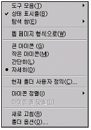
- 탐색창
- 웹 페이지 형식으로
- 현재 폴더 사용자 정의
- 도구 모음
(정답률: 59%)
38. 다음 중 한글 Windows 98에서 프린터 설치 과정의 순서가 옳은 것은?
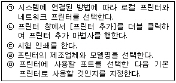
- (ㄱ)-(ㄴ)-(ㅁ)-(ㄹ)-(ㄷ)
- (ㄱ)-(ㄴ)-(ㄹ)-(ㄷ)-(ㅁ)
- (ㄴ)-(ㄱ)-(ㄹ)-(ㅁ)-(ㄷ)
- (ㄴ)-(ㄱ)-(ㅁ)-(ㄹ)-(ㄷ)
(정답률: 55%)
39. 다음 중 한글 Windows 98에서 문자 입력시 기본언어를 재설정하거나 새로운 언어를 추가하기 위한 제어판의 항목은?
- 글꼴
- 날짜 및 시간
- 키보드
- 내게 필요한 옵션
(정답률: 45%)
40. 아래의 그림은 한글 Windows 98의 [찾기] 대화상자 창이다. 여기에 포함되지 않은 구성요소는?
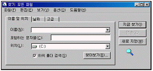
- 시트(Sheet)
- 늘어진 목록 상자(Dropdown List Box)
- 입력란(Text Box)
- 옵션 단추(Radio Button)
(정답률: 47%)
3과목: 컴퓨터 및 정보활용
41. 다음은 무엇을 설명하고 있는가?
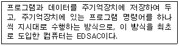
- 튜링(Turing) 기계 방식
- 프로그램 내장 방식
- ABC(AtanaSoff-Berry Computer) 방식
- 전기 기계식 계산 방식
(정답률: 68%)
42. 다음 중 멀티미디어 개발 과정이 순서대로 올바르게 나열된 것은?
- 도구선택→컨텐츠 생성→디자인→멀티미디어 저작→테스팅
- 도구선택→디자인→컨텐츠 생성→테스팅→멀티미디어 저작
- 디자인→컨텐츠 생성→테스팅→도구선택→멀티미디어 저작
- 디자인→도구선택→컨텐츠 생성→멀티미디어 저작→테스팅
(정답률: 38%)
43. 다음 괄호 안에 들어갈 말이 순서대로 올바르게 짝지어진 것은?
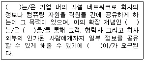
- 인터넷, 인트라넷, VPN(가상사설망), 전자서명
- 인트라넷, 엑스트라넷, VPN(가상사설망), 보안
- 인트라넷, 인터넷, 라우터, 암호화
- 인트라넷, 인터넷, 라우터, 전자서명
(정답률: 66%)
44. 다음 중 전자 상거래에 대한 설명으로 옳지 않은 것은?
- 전자상거래는 거래업무를 컴퓨터를 통해 수행할 수 있도록 전자금융, 전자문서 교환, 전자우편 등의 서비스를 총체적으로 제공해야 한다.
- 인터넷에서 신용카드를 이용한 거래를 안전하게 하기 위한 SET(Secure Electronic Transaction) 프로토콜이 필요하다.
- 전자상거래는 유형에 따라 B to B, B to C, C to C 등으로 나누어진다.
- SET(Secure Electronic Transaction) 프로토콜은 거래에 참여하는 구성원의 신원 확인 인증 절차가 필요 없다.
(정답률: 69%)
45. 다음 중 MPEG에 대한 설명으로 옳지 않은 것은?
- 손실 기법과 무손실 기법을 수학적으로 구현하여 흑백이나 컬러 이미지를 압축 저장하거나 재상이 가능하다.
- 영상의 중복성을 제거함으로써 압축률을 높일 수 있는 중복 제거 기법을 사용한다.
- 동영상 압축기법에 대한 표준을 제정하는 단체와 표준규격의 이름을 의미한다.
- MPEG-4는 MPEG-2를 개선한 것으로 동영상 데이터 전송이나 전화선을 이용한 화상회의 시스템을 사용하기 위해 개발되었다.
(정답률: 42%)
46. 다음 문장의 괄호 안에 들어갈 용어를 순서대로 올바르게 나열한 것은?
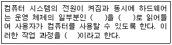
- 커널(kernel), 주기억장치, 로딩(loading)
- 서비스 프로그램, 보조기억장치, 부팅(booting)
- 커널(kernel), 주기억장치, 부팅(booting)
- 서비스 프로그램, 주기억장치, 로딩(loading)
(정답률: 56%)
47. 멀티미디어 PC에서 비디오 신호를 컴퓨터 모니터에 맞게 변환하여 모니터 화면에 표시해 주는 보드로서, 문서를 작성하면서 TV나 비디오를 볼 때 사용하는 보드는?
- TV 수신 보드
- 비디오 오버레이 보드(Video Overlay Board)
- MPEG 보드
- 비디오 캡쳐 보드(Video Capture Board)
(정답률: 61%)
48. 다음의 설명에 해당하는 데이터 통신망을 무엇이라 하는가?
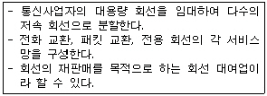
- 종합 통신망(ISDN)
- 부가기치 통신망(VAN)
- 광대역 통신망(WAN)
- 광대역 종합통신망(B-ISDN)
(정답률: 61%)
49. 내부 네트워크에서 인터넷으로 나가는 패킷은 그대로 통과시키고, 인터넷에서 내부 네트워크로 들어오는 패킷은 내용을 엄밀히 체크하여 인증된 패킷만 통과시키는 구조로, 해킹 등에 의한 외부로의 정보 유출을 막기 위해 사용하는 보안 시스템을 무엇이라 하는가?
- 인증(Authentication) 시스템
- 접근 제어(Access Control) 시스템
- 방화벽(Firewall) 시스템
- 침입 탐지 시스템(Intrusion Detection System)
(정답률: 74%)
50. 다음 중 컴퓨터의 분류에 대한 설명으로 거리가 먼 것은?
- 범용 컴퓨터는 다양한 종류의 디지털 데이터에 대한 처리가 용이하다.
- 워크스테이션은 고성능의 컴퓨터로 대부분 CISC 프로세서를 채택한다.
- 미니 컴퓨터는 마이크로 컴퓨터보다 처리 용량과 속도가 뛰어나다.
- 하이브리드 컴퓨터는 디지털 컴퓨터와 아날로그 컴퓨터의 장점을 혼합한 형태이다.
(정답률: 51%)
51. 다음 중 프로그램 패키지와 그 종류가 바르게 연결되지 않은 것은?
- 스프레드시트 - 엑셀, 로터스 1-2-3
- 데이터베이스 - dBase IV, Access
- 프리젠테이션 - 파워포인트, AutoCAD
- 워드프로세서 - 훈민정음, 한글
(정답률: 58%)
52. 다음 중 인터넷 서비스에 대한 설명으로 옳지 않은 것은?
- 프로토콜은 네트워크상에서 데이터를 주고받기 위한 방법을 규정한 약속이다.
- FTP 서비스는 국내 PC 통신의 토론광장과 유사한 형태로 일정한 주제를 놓고 여러 사람이 토론을 벌이는 인터넷 서비스이다.
- Telnet은 멀리 떨어져 있는 컴퓨터에 접속하여 마치 자신의 컴퓨터처럼 사용할 수 있도록 해주는 서비스이다.
- Gopher 서비스는 메뉴 방식의 정보검색 서비스이다.
(정답률: 58%)
53. 정보통신의 발달로 인해서 해킹을 통한 컴퓨터 범죄가 급증하고 있다. 해킹을 방지하기 위한 대책으로 옳지 않은 것은?
- 비밀 번호를 수시로 변경한다.
- 해킹 방지를 위한 보안 관련 프로그램을 보급한다.
- 사용자에 대한 보안 교육을 정기적으로 실시한다.
- 해킹 위험이 있는 네트워크의 서비스를 중지한다.
(정답률: 65%)
54. 다음 중 RAM(Random Access Memory)에 대한 설명으로 옳은 것은?
- 전원이 꺼져도 기억된 내용이 사라지지 않는 비휘발성 메모리로 읽기만 가능하다.
- 주로 펌웨어(Firmware)로 구성된다.
- 컴퓨터의 기본적인 입출력 프로그램, 자가진단 프로그램, 한글 한자코드 등이 수록되어 있다.
- 주기적으로 재충전(Refresh)하는 DRAM은 주기억장치로 사용되며, 재충전(Refresh)이 필요하지 않은 SRAM은 캐시 메모리로 사용된다.
(정답률: 55%)
55. 다음 중 파일바이러스에 대한 설명으로 옳은 것은?
- 시스템 파일을 대상으로 자신의 코드를 복제하여 다른 파일을 감염시킨다.
- 부트섹터와 파일 모두에 기생한다.
- 바이러스 프로그램 내에서 특정한 날을 체크하여 발생한다.
- 브레인 바이러스, 미켈란젤로 바이러스 등이 있다.
(정답률: 61%)
56. 다음 중 RISC 마이크로프로세서의 특징으로 옳지 않은 것은?
- 중앙처리장치용 명령어 집합이 커서 많은 명령어들을 프로그래머에게 제공해주므로 프로그래머의 작업을 쉽게 해준다.
- 전력소모가 적고 CISC 구조보다 처리속도가 빠르다.
- 복잡한 연산을 수행하기 위해서는 RISC가 제공하는 명령어들을 반복 수행해야 하므로 프로그램이 복잡해지는 단점이 있다.
- 워크스테이션급 컴퓨터에 주로 사용되고 있다.
(정답률: 40%)
57. 중앙처리장치와 주기억장치의 처리 속도 차이를 줄이기 위해 사용되는 메모리는?
- 플래시 메모리
- 가상기억장치
- 연관기억장치
- 캐시 메모리
(정답률: 79%)
58. 유틸리티 프로그램은 일반적으로 컴퓨터 시스템에 있는 기존 프로그램을 지원하거나 기능을 향상시키거나 확장하기 위해 사용된다. 다음 중 유틸리티 프로그램의 기능으로 가장 거리가 먼 것은?
- 데이터 압축
- 파일 관리
- 데이터 복구
- 백업
(정답률: 46%)
59. 다음 중 CMOS 설정에 대한 설명으로 옳지 않은 것은?
- CMOS 초기 설정값은 메인보드 제조사가 최적 상태값을 미리 저장해 놓는다.
- FDD 혹은 HDD 타입을 설정할 수 있다.
- 전원관리 및 부팅 비밀번호(password) 옵션을 설정할 수 있다.
- CMOS 설정에서 Anti-Virus 기능을 사용할 수 없다.
(정답률: 58%)
60. 다음 중 CD의 형식에 관한 설명으로 옳지 않은 것은?
- CD의 표준은 필립스사와 소니사에 의하여 주도 되었다.
- CD-R은 여러 번 기록할 수 있다.
- CD-ROM 규격에는 에러정정기능과 관련하여 저장 모드1이 있다.
- CD-I는 TV 스크린에 화면을 구현할 수 있다.
(정답률: 61%)
"작업한 문서에 파일이름을 지정하여 주기억장치에 저장하는 기능이다."는 작업한 문서를 저장하는 기능을 말한다. 이때 파일 이름을 지정하고, 주기억장치에 저장한다.
"작성한 문서는 다양한 파일 형식으로 선택하여 저장할 수 있다."는 저장할 때 파일 형식을 선택할 수 있다는 것을 말한다.
"저장하기 대화상자에서 폴더를 새로 만들거나 삭제할 수 있다."는 저장하기 대화상자에서 폴더를 관리할 수 있다는 것을 말한다.
따라서, 옳지 않은 보기는 "문서를 저장할 때 암호를 지정하여 저장할 수 있다."이다.